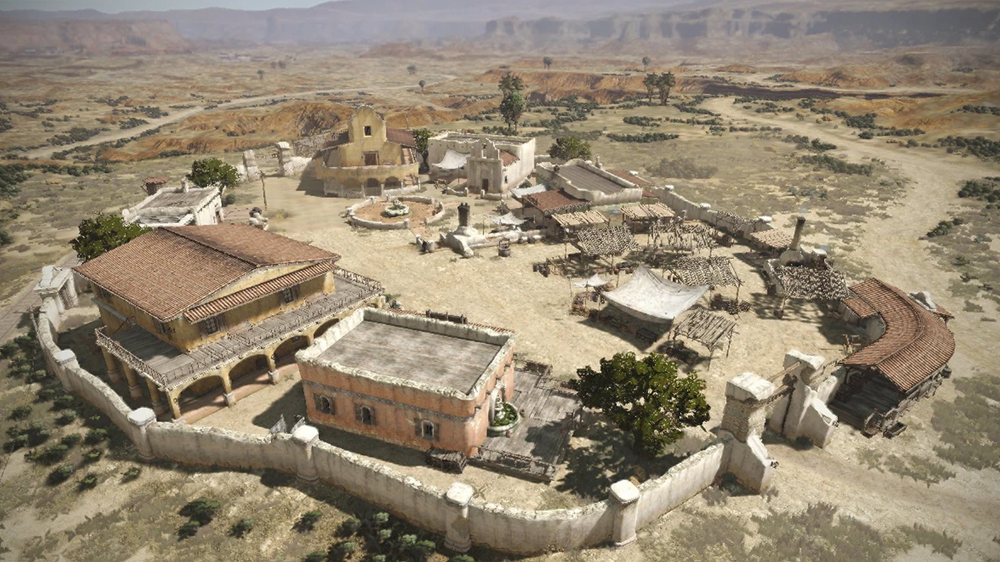
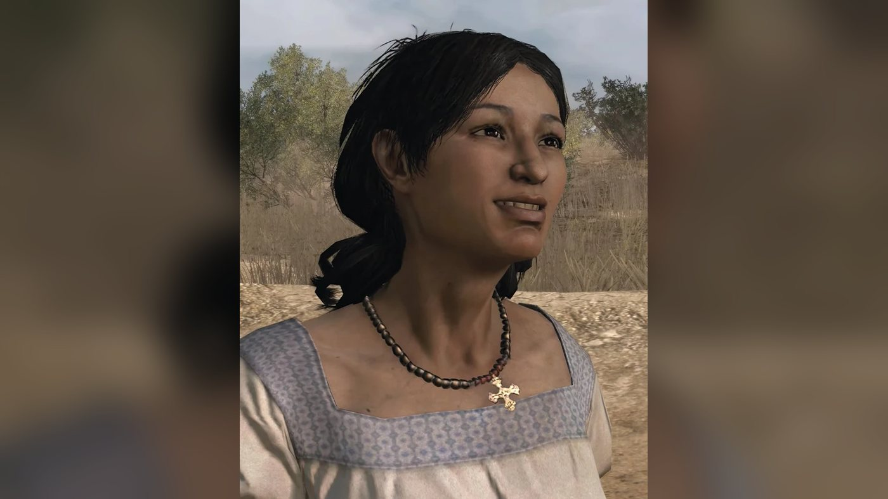
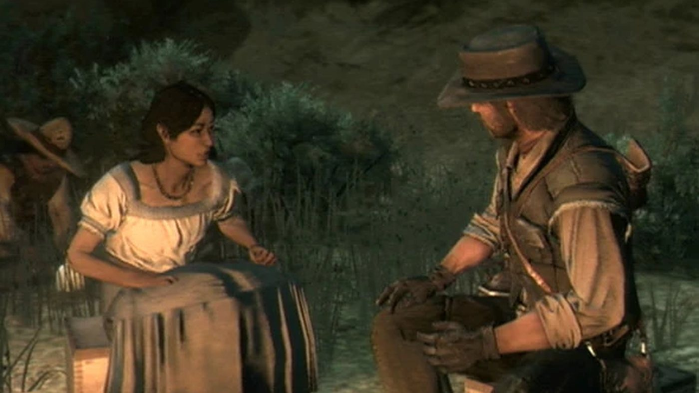
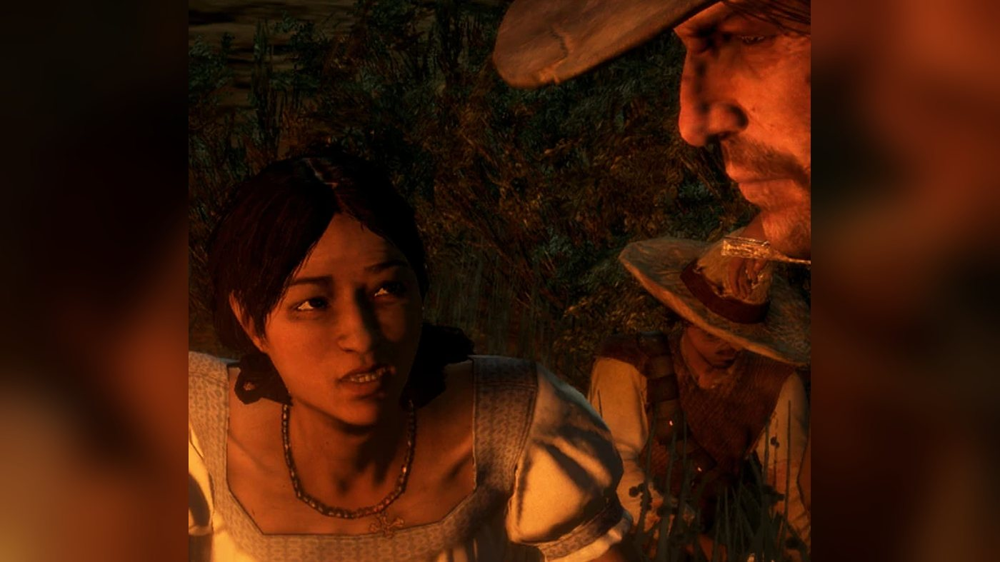
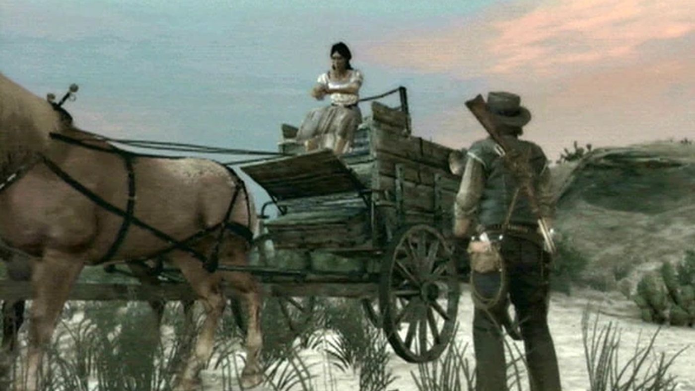
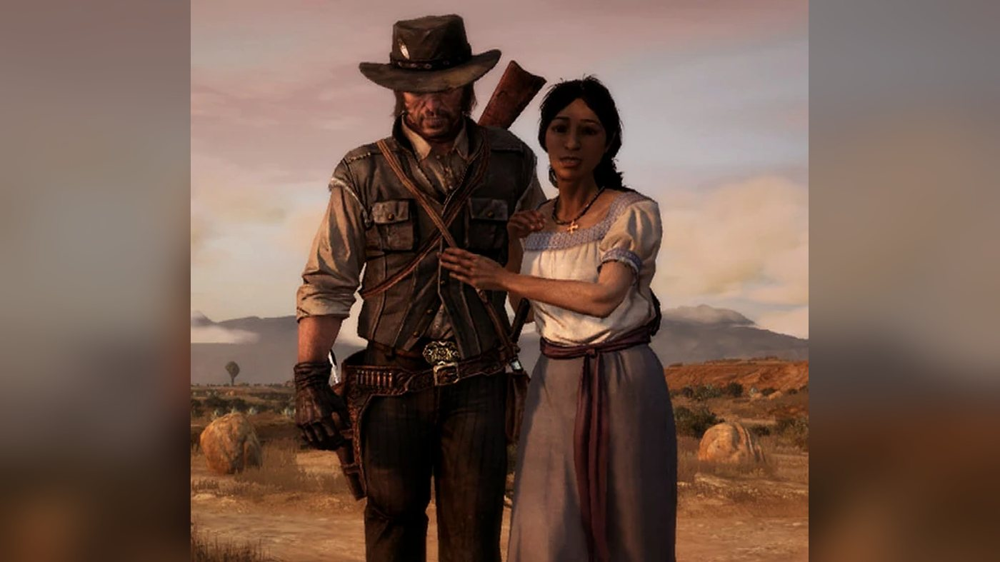

Character · Nuevo Paraiso
Luisa Fortuna
Luisa Fortuna is a young Mexican teacher and rebel in Red Dead Redemption (2010), set in 1911. She lives with her family at Campo Mirada, in Nuevo Paraíso, and fights for Abraham Reyes, the leader of the revolt against Colonel Agustin Allende. John Marston and Landon Ricketts free her from an army jail in the caves near El Matadero. She then gives John the rebel missions of the second act: her sister Miranda's escort to the docks, Reyes's rescue at El Presidio, an ambush on an army convoy and the attack on Vincente de Santa at Sepulcro.
She believes that she and Reyes are married in their hearts; Reyes confuses her name and tells John he will never marry a peasant. In Escalera, she runs at the soldiers about to execute Reyes and is shot dead. She is voiced by Francesca Galeas.
- Name
- Luisa Fortuna (called Laura by Reyes)
- Born
- 1892, according to the Game of the Year Edition guide, cited by the Red Dead Wiki; Rockstar gave her age as 19 in May 2010
- Died
- 1911, in Escalera ("An Appointed Time"), shot by the soldiers guarding Abraham Reyes
- Nationality
- Mexican
- Occupation
- Teacher and revolutionary
- Home
- The family house at Campo Mirada, Perdido, Nuevo Paraíso
- Family
- Her father (killed in 1911) and mother, unnamed in the game; her brother Emilio and her sister Miranda
- Affiliation
- Reyes' Rebels
- Allies
- Abraham Reyes, John Marston, Landon Ricketts
- Enemies
- Agustin Allende, Vincente de Santa and the Mexican Army
- Weapons
- Cattleman Revolver, Hunting Knife (Red Dead Wiki)
- Games
- Red Dead Redemption; her model is used for an undead in Undead Nightmare (Red Dead Wiki); multiplayer model (Liars and Cheats)
- Voiced by
- Francesca Galeas
Biography
Origins
The dialogue of Red Dead Redemption gives no birth date for Luisa Fortuna. According to the Red Dead Wiki, which cites the game's Game of the Year guidebook, she was born in 1892, which makes her 19 in 1911. She is Mexican and lives in Nuevo Paraíso, the Mexican province south of New Austin. Her family's house is at Campo Mirada, a homestead in the Perdido region; John Marston describes her to Abraham Reyes as the girl from Campo Mirada. The family has four other members in the game: an unnamed father, an unnamed mother, a brother named Emilio, who works as a driver, and a sister named Miranda (see Relationships). Luisa describes the Fortunas as a close family.
Landon Ricketts presents her as a teacher. According to the Red Dead Wiki, which again cites the guidebook, she is training to become a schoolteacher in 1911 and taught herself to read, write and speak English as a child. The wiki's page on her father adds that he taught her to read and write Spanish. She is also a rebel: she supports the uprising that Reyes leads against Colonel Agustin Allende, the military governor of the province.
Red Dead Redemption (1911)
In 1911, agents of the Bureau of Investigation hold John Marston's wife and son to force him to hunt down his former companions Bill Williamson and Javier Escuella. At the end of the first act, the trail takes John across the border into Nuevo Paraíso, where Allende's army and Reyes's rebels are fighting each other. Luisa appears in seven missions of the second act. Ricketts gives the first two, she gives the next four from Campo Mirada, and she dies in the last mission of the act, given by Reyes.
Act II: Nuevo Paraíso
Luisa is first mentioned in "Landon Ricketts Rides Again". At the hotel in Chuparosa, Ricketts tells John that the army is holding the sister of Emilio, the man he has been questioning about Escuella. On the way, he explains that the army wants her because she is a rebel close to Reyes, and that her looks are usually enough to interest Allende. A butcher named Carlos, in El Matadero, confirms that she is still held in the caves above the village and distracts the guards. Ricketts and John fight their way in, and Ricketts blows open the door of her cell with dynamite. She is barely alive, and Ricketts carries her out unconscious while John covers him. They escape on horses that Carlos has left at the cave mouth.
Near Diez Coronas, Carlos meets them and takes Luisa away for medical care. Before she leaves, she thanks the two men and calls them friends of the people of the land. Ricketts asks whether Javier Escuella was among the men holding her. She does not think so, but she remembers hearing the name in prison, from bad people. Ricketts takes it as a sign that Javier is still in Mexico.
In "The Mexican Wagon Train", she runs into the Chuparosa hotel while Ricketts and John are drinking. She reports that Allende is sending more men to their deaths without trial, among them a writer named Castillo and a local official whose only crime was refusing to evict smallholders who were late with their taxes. Ricketts jokes that for once he agrees with Allende, she protests, and he says he was joking and asks where the prisoners are. She answers that they are near Escalera, and thanks both men. According to the mission page, she then walks into the Chuparosa church and prays at the altar. On the trail, Ricketts tells John she is angry, and at the end of the mission he advises John to talk to her, because she is well connected on the Mexican side.
"My Sister's Keeper" opens at Campo Mirada as the family packs to leave the house. Luisa introduces John to her parents as the gringo who saved her, and her father thanks him (see Relationships). Luisa announces that the revolution is coming and that, with Reyes, anything is possible. Her parents and her brother are leaving for the hills, she says, and her sister has to flee because of the way the army treats women. Asked about herself, she tells John not to worry about her (see In her own words). When John calls her noble but naive, she answers that she would rather be dead than a cynic like him, then adds that she knows he is not really like that, since he saved her.
Her father urges her to find someone to take Miranda to the port, because the boat leaves at nightfall. Luisa asks John for one more favor: drive her sister to the docks, from where she will go to work for a kind man in the Yucatán. She says Miranda is too young for revolution. John agrees and drives Emilio's stagecoach, with Miranda beside him, through several army checkpoints to the docks of Puerto Cuchillo. Miranda thanks him and leaves before sundown. Luisa does not take part in the ride.
At the start of "Must a Savior Die?", John finds Luisa in tears on the porch of the house, which has burned down in the meantime; according to the Red Dead Wiki, the army set it on fire. She says she weeps for her country rather than for herself: Reyes has been captured. He was riding to meet her at Roca de Madera, which she calls a very romantic spot, when an army patrol ambushed him, and he is held at El Presidio. She tells John that in their hearts they are already married, but that his family does not approve of a girl as poor as she is, and that Reyes does not care about such snobbery. She says she will rescue him or die trying. John suggests they ride together to the fort and work out a plan, and she kisses him on the cheek.
Luisa drives the coach to El Presidio, north of Campo Mirada. She points John to a partly collapsed wall he can climb, warns him that the guards will kill both men if they see him, and tells him to bring Reyes to friends who wait for her by the river. John kills the executioner from a sniper's nest, frees Reyes and rides out with him behind a rebel guide. Once freed, Reyes calls her the love of his life; on the ride, he gets her name wrong and John corrects him (see Names). Reyes recognizes her only when he sees her at the river landing. She greets the two men, says the revolution will live on thanks to them, and cheers for Mexico. Reyes asks her to come with him and sings her a love song (see Names).
"Father Abraham" takes place after the battle of Chuparosa, where Reyes's rebels saved John from a firing squad. On his way to meet Luisa, John is stopped by rebels who take his gun and walk him to her campfire. She apologizes, saying they cannot be too careful. She then tells him that her father was killed the day before: the army accused him of treason, cut out his heart and fed it to the dogs. She blames Allende, and says he then took the honor of two young girls. She insists that her father's death must mean something. She explains that Allende has sent for reinforcements and that Reyes personally asked for John to stop them before they reach Escalera, by ambushing them on the old trail. John objects that he has a family to worry about. She answers that she has lost her father, that her mother is in the United States, that her sister has fled, and that she has nothing left but the cause. John agrees out of respect for her loss.
They set off for the Frontera Bridge, John either beside her on the wagon or on his own horse. On the way, Luisa says that her father's death must make them fight harder to win power for Reyes, whom she calls a true revolutionary who fights out of love rather than hate. She has heard that he killed nearly a hundred soldiers at Chuparosa to save John. She tells John that she still cannot forgive him for helping Allende and what he did to the rebels. They argue about revolution: she says there can never be a revolution without blood and that Mexico, after fighting off the Spanish, the French and the Americans, has only fought itself since independence; John answers that he has lost faith in power. She thanks him for helping her mother and Miranda escape, regrets not sending her father with them, and says they know nothing yet of his death. In "My Sister's Keeper", John drove only Miranda, and Luisa had said that her parents were going to the hills. She asks John whether he has children, and he names his son Jack.
She explains that the convoy must not be robbed but destroyed, with everyone in it, because Reyes wants to send a message. Her men have no experience with explosives, so John shows the demolition team where to place five charges on the road and mans the detonator on the ridge while Luisa watches for the wagons from above. The convoy is destroyed. Luisa thanks John, says her father would be proud, and returns to Campo Mirada with her rebels, promising to repay the favor.
In "Captain De Santa's Downfall", John finds her at the rebels' camp (Campo Mirada, according to the mission page) as her men load their rifles. She tells him that Captain Vincente de Santa has been sent to oversee a massacre at Sepulcro and asks him to kill him and the rest of Allende's followers. She sends her men with John and stays at the camp. At Sepulcro, John captures De Santa, who is then shot by John or by the rebels, at the player's choice (see Vincente de Santa).
Luisa does not appear in "The Gates of El Presidio", but she is discussed in its opening scene at Agave Viejo, where John walks in on Reyes with another woman. When John asks what Luisa would say, Reyes first asks who he means. He then recommends her to John, laughs at the idea that she thinks she is his wife, and says he will never marry a peasant, because he means to become president of Mexico (see Abraham Reyes).
"An Appointed Time" is the last mission of the act. The army has executed rebels in Escalera and captured Reyes. John walks through the town as the townspeople and rebels fight the soldiers, and finds Reyes being beaten in the square by Major Raul Zubieta and his men before his execution. John draws his gun and tells them to let Reyes go. Luisa then rushes at the soldiers with a knife, shouting in Spanish to leave her man alone, and the soldiers guarding Reyes shoot her dead. John kills two of them, then kills Zubieta in a duel and cuts Reyes loose. The pages of the Red Dead Wiki give differing accounts of who fires and how many times.
Luisa dies in Escalera in 1911, on the day the town falls to the rebels. After the battle, Allende and Bill Williamson die on the road out of town. Reyes proclaims that Mexico is his and thanks John, who answers that the victory also belongs to those who gave their lives, people like Luisa. Reyes calls her brave and says she will be missed, then asks who she was. John reminds him that she was his peasant girl and wife to be. Reyes promises that a day will be named after her, gets her name wrong again (see Names), and turns back to politics.
Undead Nightmare (non-canon)
Undead Nightmare, an expansion released in 2010, is not part of the series' canon, and Luisa has no role in its story. According to the Red Dead Wiki, an ordinary undead uses her character model. The wiki says this undead is first met in Escalera, and that her necklace (see Appearance) shows on it when the player gets close and uses Dead Eye.
Personality
Rockstar described her on its Newswire on May 3, 2010: "Luisa Fortuna is a 19-year old Mexican teacher and revolutionary, who knows how to handle a sidearm." On the road to Sepulcro, Victor Melendez, one of the rebels she commands, tells John: "She can fight as well as any man."
In the transcripts, she speaks Spanish with the rebels and her family and English with John and Ricketts, whom she calls Mr. Marston and Mr. Ricketts. She first calls him John during "Father Abraham" and greets him by that name in "Captain De Santa's Downfall". She speaks of Reyes as Abraham or Abraham Reyes, and of the revolution as a duty owed to the people and to her dead father. She says the province was renamed Nuevo Paraíso (New Paradise) when the Spanish left, and that one day it will live up to its name.
In her own words
To John, as her family leaves Campo Mirada in "My Sister's Keeper": "Don't worry about me, Mr. Marston. I am living in history. I am not afraid to die." On the wagon ride to the Frontera Bridge in "Father Abraham", when John says he once believed that enough spilled blood could change the way people think: "Revolutions are always won with blood." A few lines later, when he says that nobody is ever free: "Be honest with yourself and you will be free." As the army convoy reaches the charges: "Every time Allende hits us, we hit him back harder."
Names
Fortuna is the Spanish word for fortune or luck. Reyes calls her Laura: he asks John how he knows "my young lover, Laura" in "Must a Savior Die?", then sings "Laura, dame la fuerza para luchar" (Laura, give me the strength to fight) as they ride off together. After her death, in "An Appointed Time", he promises her a "Laura's Day" and, corrected by John, says he knew a Laura as well. When he recognizes her at the river, he calls her "Mi amiga" (my friend). The French-language Red Dead Wiki lists Laura as her nickname; the English-language wiki lists Laura and Peasent (sic), both attributed to Reyes.
She calls herself "little more than a peasant girl" when she explains why Reyes's family does not approve of them. Reyes, speaking of her to John at Agave Viejo, lumps her with "These peasant girls".
Appearance
She is a young woman with dark hair tied back. She wears a loose white blouse trimmed with blue at the neckline and sleeves. She wears a gold cross on a beaded necklace, which, according to the Red Dead Wiki, she keeps throughout the game.
Relationships

Abraham Reyes
The rebel leader she loves and serves. She tells John they are already married in their hearts (see Quotes), sends him to free Reyes at El Presidio and passes on Reyes's orders in "Father Abraham" (see Biography).
Reyes confuses her name (see Names). At Agave Viejo he dismisses her as a peasant he will never marry (see Quotes). She dies in Escalera trying to save him (see Biography).

John Marston
John and Ricketts free her from the caves near El Matadero (see Biography). In "My Sister's Keeper", John calls her naive and she calls him a cynic (see Quotes). She kisses his cheek when he agrees to help free Reyes.
In "Father Abraham", she tells him she cannot forgive him for having helped Allende against the rebels (see Biography), and that refusing to choose a side is a choice; John replies that Allende betrayed him. On the same ride, he tells her he has a son at home and mentions a daughter who died (see Jack Marston). After her death, John reminds Reyes of those who gave their lives, like her (see Biography).

Landon Ricketts
Ricketts is questioning her brother Emilio about Escuella at the Chuparosa hotel when he tells John that the army holds her (see Quotes); he rides with John to free her (see Biography). On the way to El Matadero, he calls her a good woman and a teacher, and swears revenge on her captors if they lay a finger on her.
In "The Mexican Wagon Train", she comes to him at the Chuparosa hotel to report the prisoners Allende is sending to their deaths, and he teases her before helping (see Biography). He then sends John to her (see Quotes).

Agustin Allende
The governor whose army holds her in the caves near El Matadero (see Biography). She blames him for the executions of untried prisoners and for her father's death, calls him pure evil and says she will one day cut his heart out (see Quotes). He is killed on the road out of Escalera in the mission in which she dies (see Biography).

Vincente de Santa
She learns that the captain has been sent to oversee a massacre at Sepulcro, calls him an animal and vermin, and sends John there with her men to kill him and Allende's other followers (see Biography).

Javier Escuella
Just after her rescue, she tells Ricketts that she heard Javier's name in prison (see Quotes).

Jack Marston
She never meets him. In "Father Abraham", she asks John whether his son is looking after his wife and what the boy is called; John answers Jack, and says he is not much younger than her.
Emilio Fortuna
Her brother. In "Landon Ricketts Rides Again", he is talking with Ricketts at the Chuparosa hotel and answers only in Spanish. The Red Dead Wiki describes him as her older brother and a stagecoach driver; Miranda says he works as a driver, and she and John take his stagecoach. Luisa first says her parents and her brother are leaving for the hills, then, in "Father Abraham", that Emilio will stay and fight like her.
Miranda Fortuna
Her sister, younger according to the Red Dead Wiki, whom John drives to the docks of Puerto Cuchillo at Luisa's request (see Biography).
Her father
His name is not given in the game; the Red Dead Wiki calls him Mr. Fortuna. At Campo Mirada, he greets John with "Muchas gracias! My family is indebted to you. Forgive my English." The army kills him before "Father Abraham" (see Biography).
Her mother
Her name is not given in the game; the Red Dead Wiki calls her Mrs. Fortuna. She weeps on the porch at Campo Mirada as Miranda prepares to leave. In "My Sister's Keeper", Luisa says her parents are heading to the hills; in "Father Abraham", she says her mother is in the United States and thanks John for helping her mother and Miranda escape. Luisa adds that neither knows of her father's death.
Carlos
The butcher of El Matadero who helps Ricketts and John reach her cell by distracting the guards (see Biography). He thanks God when he sees her alive, and she leaves with him at the end of the mission.
Victor Melendez
One of her rebels, who guides John to Sepulcro on her orders. On the way, he praises her fighting (see Personality) and explains that women and even children must become soldiers if the rebels are to win.
Raul Zubieta
The army major who is about to execute Reyes in Escalera when she runs at his men with a knife. She is shot dead, and John kills Zubieta in a duel (see Biography).
Weapons and gameplay
The Red Dead Wiki lists a Cattleman Revolver and a Hunting Knife as her weapons. She has a knife in hand when she runs at the soldiers in Escalera (see Biography). According to the Red Dead Wiki, she never rides a horse herself, like two other major characters, Agustin Allende and Nigel West Dickens. In "Landon Ricketts Rides Again", Ricketts carries her on his horse, according to the mission page, and she leaves with Carlos, who, according to his wiki page, takes her home on horseback. She drives the wagon in "Must a Savior Die?", with John riding shotgun; according to the mission page, she can crash it if the player watches the journey instead of skipping it. In "Father Abraham", John chooses between riding in her wagon and following on his own horse.
In "Father Abraham", her rebels have no experience with explosives, so John handles the dynamite (see Biography); she orders her men to their positions in Spanish. The missions she takes part in fail if John kills her ("Landon Ricketts Rides Again"), assaults or kills her ("Must a Savior Die?", "Father Abraham", "Captain De Santa's Downfall"; in all three, hurting any rebel also fails the mission) or abandons her ("Must a Savior Die?"). Killing the horses that pull her wagon also fails "Must a Savior Die?" and "Father Abraham". According to the mission page of "An Appointed Time", her body cannot be looted. The missions she gives are listed in the Missions table.
Missions
Luisa appears in seven story missions of Red Dead Redemption, all in the second act, set in Nuevo Paraíso. Her own strand has four missions, which all start at Campo Mirada. It becomes available after "Landon Ricketts Rides Again", given by Landon Ricketts, and "Civilization, at Any Price", given by Vincente de Santa. She is also discussed in one mission given by Abraham Reyes.
Appearances
| Mission | Act | Luisa's role |
|---|---|---|
| Landon Ricketts Rides Again | Act II: Nuevo Paraíso | Prisoner of the army in the caves near El Matadero; freed by Ricketts and John Marston, then taken to safety by Carlos. 31st mission, given by Ricketts in Chuparosa. Rewards: 50 honor and 75 fame; with "Civilization, at Any Price", opens her strand. |
| The Mexican Wagon Train | Act II: Nuevo Paraíso | Reports that Allende is sending untried prisoners to their deaths near Escalera, which sets off the convoy raid. 33rd mission, given by Ricketts. Reward: 150 fame. |
| My Sister's Keeper | Act II: Nuevo Paraíso | Mission giver. Asks John to drive her sister Miranda to the docks of Puerto Cuchillo before her boat leaves. 34th mission, from Campo Mirada. Rewards: 100 honor and 75 fame. |
| Must a Savior Die? | Act II: Nuevo Paraíso | Mission giver. Drives John to El Presidio to save Reyes from a firing squad and waits for them by the river. 35th mission. Rewards: 50 honor and 200 fame; unlocks the stranger mission "Aztec Gold". |
| Father Abraham | Act II: Nuevo Paraíso | Mission giver. Announces her father's death and has John blow up an army supply convoy at the Frontera Bridge. 38th mission; requires "Cowards Die Many Times" and "Must a Savior Die?". Rewards: 125 honor and 200 fame. |
| Captain De Santa's Downfall | Act II: Nuevo Paraíso | Mission giver. Sends John and her men to stop De Santa's massacre at Sepulcro. 39th mission, from Campo Mirada to Casa Madrugada. Rewards: 125 honor and 300 fame. |
| An Appointed Time | Act II: Nuevo Paraíso | Killed in Escalera while trying to save Reyes from execution; John avenges her in a duel with Major Raul Zubieta. 41st mission, given by Reyes, the last of the act. Rewards: 300 fame and up to 535 honor; opens West Elizabeth. |
Mission in which she is mentioned
| Mission | Act | Link with Luisa |
|---|---|---|
| The Gates of El Presidio | Act II: Nuevo Paraíso | At Agave Viejo, John asks Reyes what Luisa would think of the woman he is with; Reyes laughs at the idea of marrying her (see Biography). 40th mission, given by Reyes. |
Quotes
The lines below are given in the original English and checked against the mission transcripts of the Red Dead Wiki. Most are exchanges between Luisa and John Marston, or lines that other characters say about her.
Red Dead Redemption, Act II
But they do have his sister. Emilio's I mean. She's a fine young woman, teacher, a human being. Not the clothed vermin so many people seemed to have turned into.
Landon Ricketts, Landon Ricketts Rides Again (RDR1, Act II), at the hotel in ChuparosaLuisa: Thank you for saving me. You're good men. Friends of the people of this land. / Landon: Was someone named Javier Escuella one of the men holding you? / Luisa: No...I don't know. I don't think so. But, I remember that name from prison. Bad people spoke of him.
Landon Ricketts Rides Again (RDR1, Act II), after the escape from the cavesMarston: Luisa was pretty shaken up. / Landon: She's angry. This war is getting dirtier by the day. People are being executed just for having an opinion.
The Mexican Wagon Train (RDR1, Act II), on the trail to EscaleraTalk to Luisa. She'll help you and she's well-connected in that other land.
Landon Ricketts, The Mexican Wagon Train (RDR1, Act II), parting from John on the American side of the borderLuisa: Great and terrible things! The revolution is coming! The country will be in turmoil once more. This time, we hope is the last time. / Marston: Does that seem likely? / Luisa: With Abraham Reyes, anything is possible!
My Sister's Keeper (RDR1, Act II), at Campo Mirada, when John asks what is happeningMarston: Your nobility's almost as affecting as your naivety. / Luisa: I would rather be dead than a cynic like you, Mr. Marston. / Marston: I would too... / Luisa: I know you're not really like that. You saved me.
My Sister's Keeper (RDR1, Act II), at Campo Mirada, after she tells John not to worry about herLuisa: Mr. Marston, can I ask one more favor of you? Can you take my sister to the docks? We are sending her to work for a kind man in the Yucatán. She is too young for revolution. / Marston: Okay. Anything I can do to help out.
My Sister's Keeper (RDR1, Act II), at Campo MiradaLuisa: I don't weep for myself, but for my country! Abraham Reyes has been captured! / Marston: He has? / Luisa: He was coming to meet me at Roca Madera. It's a very romantic spot. It was a beautiful night, yet he was ambushed by a patrol. My heart is breaking, but I cry for Mexico.
Must a Savior Die? (RDR1, Act II), on the porch of the burned house at Campo MiradaEl Presidio... You know, in our hearts, we are married already, but his family does not approve.
Luisa, Must a Savior Die? (RDR1, Act II), when John asks where Reyes is heldMarston: Luisa sent me. We have to meet her by the river. / Abraham: Que? / Marston: Luisa. The girl you're marrying. / Abraham: Oh, yes. Such a devoted thing. El amor de mi vida.
Must a Savior Die? (RDR1, Act II), at El Presidio, after John cuts Reyes freeLuisa: My father must not die in vain! His death must mean something. / Marston: It'll mean that war is brutal and unnecessary and good people die and that's all it will mean. / Luisa: That is not enough.
Father Abraham (RDR1, Act II), by the campfire, after she announces her father's deathLuisa: We all have problems. This is about the people! My father died for his people. For these men and for millions like them, that they may be free. / Marston: While there are guns and money, there won't be any freedom, Luisa.
Father Abraham (RDR1, Act II), by the campfireLuisa: Mr. Marston. I have lost my father. My mother is in the United States. My sister has fled. I have no family, just the cause. Please. Good actions make you a good man. / Marston: Then, I'm doomed, but I will help you, out of respect for your loss.
Father Abraham (RDR1, Act II), by the campfire, when John says he has his own family to worry aboutMarston: Allende betrayed me, and I saw him do bad things. Things that disgust even me. / Luisa: Allende es pura maldad. One day I will cut his heart out.
Father Abraham (RDR1, Act II), on the way to the Frontera Bridge; "Allende es pura maldad" means "Allende is pure evil"Luisa: You Americans forget too quickly, that is the problem. If it wasn't for your revolution, you would still be making tea for the English. / Marston: At least we knew where we stood. It's more difficult to understand why your own people treat you like shit.
Father Abraham (RDR1, Act II), on the way to the Frontera BridgeLuisa: What is his name? / Marston: Jack. Jack Marston. I ain't been much of a father. We tried to hide the bad from him growin' up but he saw things he shouldn't. / Luisa: Children see more than you think / Marston: That's what I'm worried about. I don't want him to become a man like me.
Father Abraham (RDR1, Act II), on the way to the Frontera Bridge, after she asks John whether he has childrenLuisa: No, destroy them! And kill everyone. Abraham wants to send a message. Do you have experience with explosives? / Marston: A little. Been a long time. / Luisa: Good. Because we do not.
Father Abraham (RDR1, Act II), when John asks whether they are going to steal the army's suppliesMarston: What would your most loyal follower, Luisa say about that? / Abraham: Who? / Marston: Luisa. The girl from Campo Mirada. / Abraham: Ah, her. A gentleman never tells, but she was a most wonderful, ay... I just say she was incredible, yes. Let me tell you something. I strongly recommend her. You take her when you have the chance, my brother. (...) / Marston: Are you going to marry her? / Abraham: Marry a peasant? My dear boy, don't be absurd. I'm going to be the next president of Mexico. My wife will meet ambassadors, kings, other great men. The very thought that I would marry some peasant girl with the hands of a farmer, well I really don't think so.
The Gates of El Presidio (RDR1, Act II), at Agave ViejoAbraham: Ya, ya matalo. / Luisa: Déjen mi hombre! / Raul: Ay, Dios mio! Santa Maria! / Marston: You want to settle this now, friend? Or do you want me to shoot you in the head right now, for that poor girl?
An Appointed Time (RDR1, Act II), in the square of Escalera; Luisa's last words. Reyes's and Luisa's lines are in Spanish in the original
Development and performance
Casting
Luisa Fortuna appears in Red Dead Redemption, released in May 2010. The Red Dead Wiki credits Francesca Galeas as her voice. No interview in which Galeas discusses Red Dead Redemption was found. No source consulted names a performer for Luisa's motion capture, and Wikipedia's article on the game does not mention the character.
Design and promotion
On May 3, 2010, two weeks before the game's release, Rockstar presented on its Newswire two character artworks newly added to the official Red Dead Redemption website, one of Luisa and one of Irish. The post adds that both characters feature in the site's "People of the West" updates and in the game's character videos, and that the artworks are available as desktops, backgrounds, icons and avatars on the Downloads page. The French-language Red Dead Wiki notes that she is one of the backgrounds of the official site. According to the Red Dead Wiki, a pre-release version of the game gave her a more worn face, dark yellow teeth and unkempt hair. The Red Dead Wiki's page on the game's cut content does not mention her.
Reception
Character rankings
WhatCulture ranked her fifth in "5 Most Memorable Red Dead Redemption Characters (Aside From John Marston)", by David Michael Hughes, published on November 16, 2013. The entry opens: "Luisa Fortuna is a rebel who openly opposes Colonel Allende and is willing to suffer or die for the revolution." Hughes writes that "Luisa is nothing if not extremely brave", and that "Luisa sacrifices herself for Reyes, the man who cannot even recall her very name and only valued her for sexual pleasure." He adds that what she died for was not worth it, in his view, because Reyes becomes as bad a dictator as the man he overthrows.
Academic study
In "The Mustang Diaries: A Study of Mexico in Red Dead Redemption 1", published in the Revista Panamericana de Comunicación (vol. 4, no. 2, 2022), Javier Aldape, of Texas A&M University, describes her as "a staunch Reyista who firmly believes Abraham is the true savior of the country". In the same passage, he writes that Reyes forgets his followers' names. Aldape also notes, without naming her, that Reyes cares more about the corridos sung about him than about the soldaderas, the women fighters who die for his cause.
Other media and legacy
Multiplayer
Luisa became a playable character model in the multiplayer mode of Red Dead Redemption with the Liars and Cheats Pack, detailed by Rockstar on August 27, 2010 and released on September 21, 2010. The pack added 15 characters from the story, as well as Poker, Liar's Dice, horse races and the Stronghold mode. Players select her in the Redemption section of the Outfitter, alongside John, Abigail, Jack, Bonnie MacFarlane, Leigh Johnson, Nigel West Dickens and Seth Briars. According to the Red Dead Wiki, she wears a dress throughout the story, while her multiplayer model is given chaps, a change also made to Abigail's model. Her family's house at Campo Mirada, which burns in the story, is still standing in multiplayer, according to the wiki.
The versions of Red Dead Redemption released on PlayStation 4 and Nintendo Switch on August 17, 2023, then on PC on October 29, 2024, contain the story and Undead Nightmare but not the multiplayer mode, so the Luisa model is not available in them.
Later games
Luisa does not appear in Red Dead Redemption 2 or in Red Dead Online. The Red Dead Wiki lists her only in Red Dead Redemption, and as a character model in Undead Nightmare (see Biography).
Trivia
- According to the mission page of "Father Abraham", Luisa calls out when to set off the charges, but her timing is not always right. The page says she can also criticize John's handling of the explosives even after a direct hit (noted on PlayStation 3).
- According to the same page, "Father Abraham" is the first mission in which John says his son's name aloud.
- The mission page of "The Mexican Wagon Train" spells the writer's name Castilla. None of the prisoners it names seems to be that writer or the official Luisa mentions.
- According to the mission page of "An Appointed Time", Luisa falls on her back when she is shot, but lies face down once the cutscene ends.
- The cemetery of Sepulcro has a grave in the name of Alejandro Fortuna, who died on August 14, 1909; its epitaph reads "He died for his country." according to the Red Dead Wiki's list of the graves. No dialogue links him to Luisa's family.
Gallery




